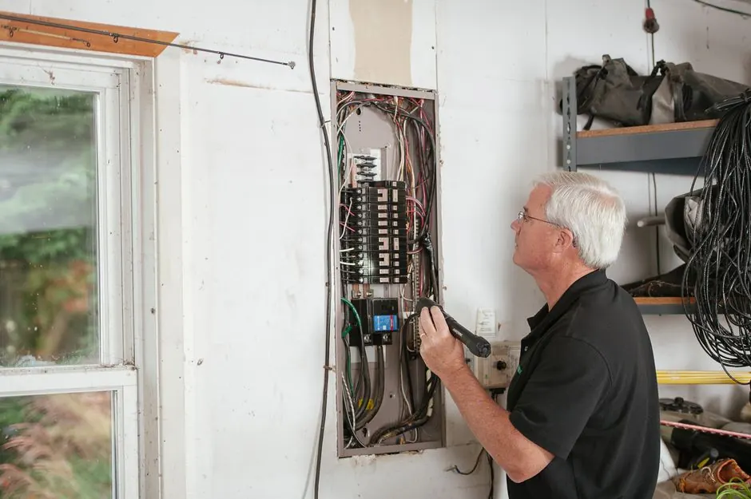

Thorough Property Inspection
We conduct a detailed inspection to identify any signs of termite activity and assess damage.
Our Emergency Termite Control service covers a comprehensive range of treatments and assessments to ensure your home is protected from termites. We provide a detailed plan tailored to your specific needs.
We conduct a detailed inspection to identify any signs of termite activity and assess damage.
Our technicians apply effective treatments using advanced techniques to eliminate termites.
We schedule follow-up visits to ensure the effectiveness of the treatment and monitor for any signs of re-infestation.
After treatment, we provide recommendations for preventive measures to protect your home from future infestations.
$50 OFF First-Time Service
Mention this offer when scheduling. New customers only — restrictions apply.
Emergency Termite Control Paterson NJ focuses on rapid detection and treatment of termite infestations to minimize damage to your property. Our trained technicians utilize advanced inspection tools and effective treatments, including liquid termiticides and bait stations, ensuring a comprehensive approach to pest control.
Local customers in Paterson often encounter termite issues due to the region's humid climate and older wooden structures. This makes it essential to seek immediate assistance. Our Paterson NJ urgent termite services are designed to address these common challenges effectively, providing peace of mind to homeowners.
Our process is designed to ensure a thorough and effective response to your termite emergency.
Schedule
Call or book online — a real human picks up and confirms a 2-hour arrival window.
Diagnose
Licensed tech inspects on-site, then walks you through the cause and your options.
Fix
Clean, code-correct repair done with the right parts and zero subcontracted shortcuts.
Guarantee
Every job backed by a written workmanship warranty — and we stand behind it.
Termite Bait Stations
Used to monitor and control termite activity, providing a proactive approach to pest management.
Liquid Termiticides
Applied to soil and wood surfaces to create a barrier against termites, effectively preventing infestations.
Inspection Tools
Advanced tools help detect hidden termite activity and assess damage accurately.
Foam Treatments
Used for localized treatment of infestations in hard-to-reach areas, ensuring thorough coverage.
Integrated Pest Management (IPM)
A holistic approach combining multiple strategies for effective termite control, focusing on prevention and long-term solutions.
Baiting Systems
Utilizes bait stations to lure and eliminate termites, reducing their population and preventing future infestations.
Chemical Barriers
Involves applying termiticides to create a protective barrier around structures, preventing termite access.
01
What we do: Contact us immediately to assess the situation and implement treatment.
→ Quick action can prevent extensive damage and save you money on repairs.
02
What we do: Schedule an emergency inspection with our team to determine the extent of the infestation.
→ Early detection allows for targeted treatment, protecting your home's structural integrity.
03
What we do: Reach out to us for a comprehensive evaluation and treatment plan.
→ Timely intervention can eliminate the problem before it escalates.
In Paterson, our Emergency Termite Control services are tailored to the local climate and building conditions. The humid environment can exacerbate termite problems, making prompt action essential. We understand the common issues faced in neighborhoods like Riverside and Downtown Paterson, where older wooden structures are prevalent. Our team is equipped to handle these specific challenges, ensuring effective solutions for every homeowner.
Riverside
Known for its vintage homes, making it particularly susceptible to termite infestations.
Hillcrest
A residential area with a mix of older and newer homes, requiring tailored pest control strategies.
Downtown Paterson
High traffic and older buildings can lead to unique pest control challenges.
High humidity levels in summer
Creates an ideal environment for termite activity, necessitating vigilant monitoring and control.
Older wooden structures
More vulnerable to infestations, requiring specialized treatment methods to protect homes.
Our Emergency Termite Control services effectively address several key issues faced by homeowners.
Problem
Ignoring termite infestations can lead to severe structural damage, compromising the safety of your home.
Our Fix
Our emergency services target infestations quickly, using advanced treatments to eliminate termites and prevent further damage.
Problem
Delaying treatment can result in costly repairs. Early intervention is crucial.
Our Fix
We provide thorough inspections and rapid treatment to minimize repair costs and protect your investment.
Problem
Homeowners often lack understanding of termite behavior, making it hard to identify infestations early.
Our Fix
Our expert technicians educate homeowners on signs of infestation and prevention strategies, empowering them to protect their homes.
Emergency termite control offers several advantages that can protect your home and investment.
Rapid Response Times
Our team is available 24/7, ensuring you receive prompt service. With our affordable Emergency Termite Control Paterson options, you can expect a technician on-site within hours, minimizing potential damage.
Comprehensive Inspections
We conduct thorough inspections to identify the extent of the infestation. Using state-of-the-art tools, we ensure no hidden termites are overlooked, providing you with a detailed report and treatment plan.
Long-Lasting Solutions
Our treatments include high-quality products from trusted brands like Termidor and Bayer, ensuring effective elimination of termites and prevention of future infestations.
Expert Technicians
All our technicians are certified applicators, trained to handle emergency pest control Paterson situations. Their experience ensures the highest standards of service and safety for your home.
The cost of Emergency Termite Control Paterson NJ varies based on the severity of the infestation and the treatment methods required. Factors such as property size, extent of damage, and type of treatment influence the overall price. Generally, prices range from $200 to $1,500, depending on the scope of work needed. Our goal is to provide affordable Emergency Termite Control Paterson services without compromising quality.
Typical Investment Range
$200 - $1,500 depending on scope
Investing in emergency termite control is crucial for protecting your home and avoiding costly repairs in the future.
What changes the price
Extent of Infestation
More severe infestations require more extensive treatments, increasing costs.
Property Size
Larger properties may incur higher treatment costs due to increased labor and materials.
Type of Treatment
Different treatment methods have varying costs, with some being more labor-intensive than others.
Follow-Up Services
Ongoing monitoring and preventive treatments can add to the overall cost but are essential for long-term protection.
Google ★★★★★4.9
Emergency Termite Control Paterson NJ provided exceptional service. They were quick to respond and knowledgeable about the issues I faced.
Yelp ★★★★★4.8
I highly recommend their services! They handled my termite problem efficiently and professionally.
BBB ★★★★★4.7
Great experience with this company! They were thorough and explained everything clearly.
With over 15 years of experience in the pest control industry, our team specializes in Emergency Termite Control Paterson NJ. We are licensed and insured, ensuring compliance with all local regulations and safety standards.

Real experiences from customers who chose our Emergency Termite Control services.
“I had a serious termite issue in my home. Emergency Termite Control Paterson NJ responded quickly and handled everything professionally. I felt relieved knowing my home was in good hands!”
Sarah T.
Homeowner, Riverside
“The team was prompt and efficient. They provided a thorough inspection and treatment plan for our building. Highly recommend their emergency services!”
Mike R.
Property Manager, Downtown Paterson
“I was impressed by the speed of their response. The technicians were knowledgeable and explained everything. I couldn't have asked for better service during a stressful time.”
Linda K.
Homeowner, South Paterson
Real answers to the questions we hear most often from local homeowners and property managers.
Our termite inspection service is the first step in Emergency Termite Control, ensuring that any infestations are identified early and addressed promptly.
View Termite InspectionWe specialize in drywood termite treatment, providing targeted solutions for this specific type of infestation, which is crucial for effective emergency control.
View Drywood Termite TreatmentOur termite prevention services help protect your home from future infestations, complementing our emergency control measures.
View Termite Prevention ServicesOur residential termite control services are designed to provide ongoing protection for your home, ensuring peace of mind after emergency treatments.
View Residential Termite ControlWe offer termite bait station installation as a proactive measure to monitor and control termite activity around your property.
View Termite Bait Station InstallationOur wood treatment services help protect your home's structure from termites, making it an essential part of our emergency control strategy.
View Wood Treatment for TermitesWe invite you to reach out for any termite control needs you may have. Our team is available to assist you with questions or to schedule an inspection. We typically respond within a few hours.
Phone
+1 (862) 475-0111Address
178 Beaver Run Rd, Lafayette Township, NJ 07848
Hours
Mon–Fri: 7AM – 7PM
Sat: 8AM – 4PM
Sun: Emergency Only
24/7 Emergency Available